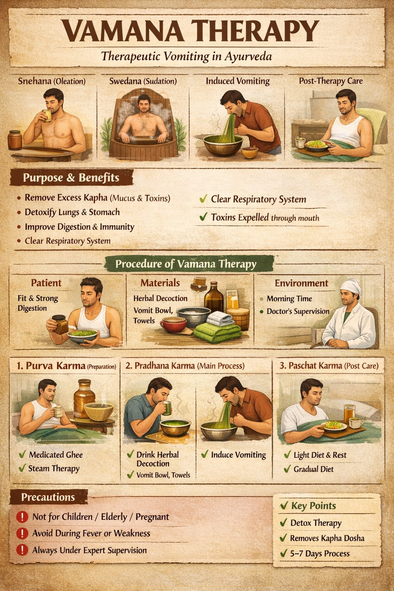
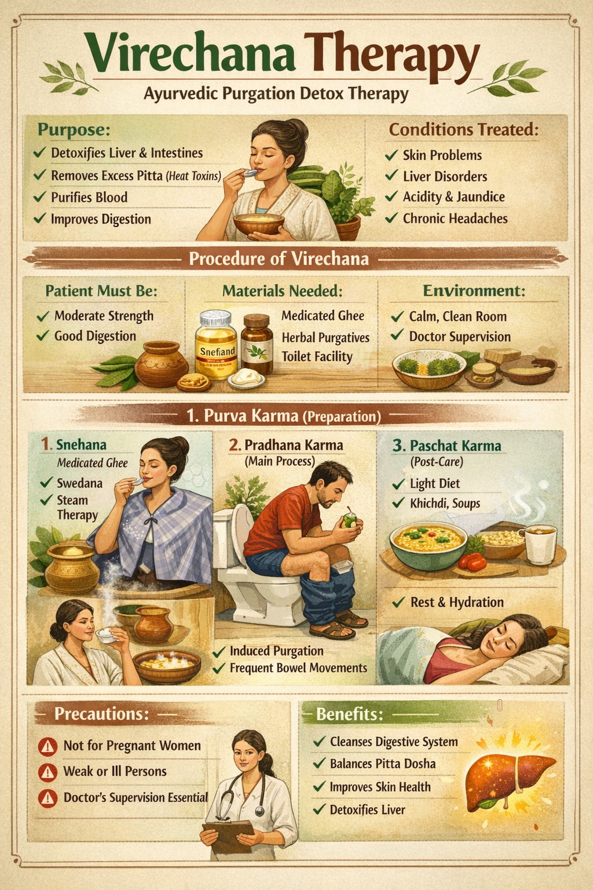
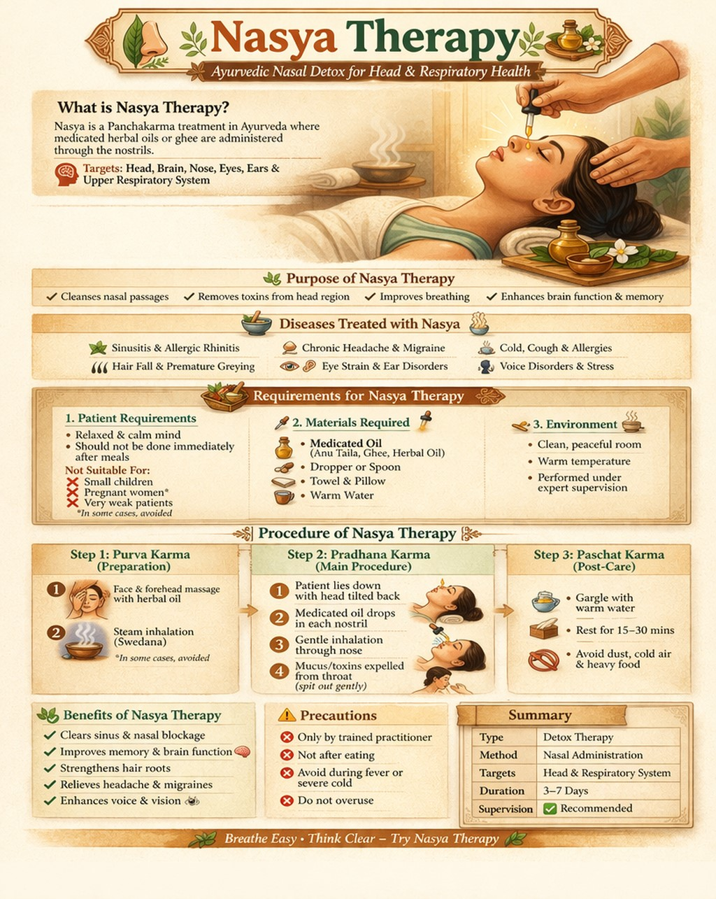
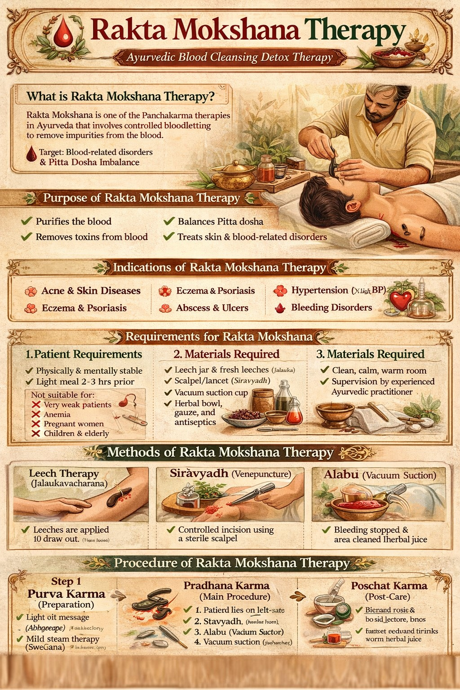

Terms & Conditions
1. This system provides health suggestions based on symptoms.
2. It does not replace professional medical advice.
3. Patient data is stored locally for project demonstration.
4. Users should consult a certified Ayurvedic doctor before therapy.
5. By using this system, you agree to educational and research usage.
सर्वे भवन्तु सुखिनः। सर्वे सन्तु निरामयाः।
सर्वे भद्राणि पश्यन्तु। मा कश्चिद् दुःखभाग्भवेत्॥.
Doctor Admin
Welcome
Manage your analysis journey, view care guidance, and keep your appointments organized from this patient dashboard.
Patient:
Email:
Age:
Patient Overview
Keep your key care actions visible while you move between symptom analysis, booking, results, and follow-up communication.
Notifications
Stay updated with appointment reminders and follow-up alerts.
Prescriptions
View your latest digital prescriptions shared by your doctor.
Consultation Chat
Send follow-up questions to your doctor for a selected appointment.
Health Questionnaire
Select all symptoms you currently feel. More accurate selection gives better dosha analysis.
Dosha Result
Dominant Dosha:
Recommended Therapy
Diet & Lifestyle:
Progress:
Doctor Admin
Doctor:
Specialty:
Dashboard Overview
Track your current workload, patient volume, and appointment status at a glance.
Doctor Profile
Keep your specialization, experience, and available timings updated for patients.
Notifications
Patient Management
Search your patients by name, email, issue, or dosha pattern.
Calendar View
Upcoming Appointments
E-Prescription
Create a digital prescription, use medicine suggestions, and export it as PDF.
Doctor ↔ Patient Chat
Share consultation guidance and follow-up messages linked to each appointment.
Book Appointment
System Suggested Doctor: No doctor suggested yet
Why: Choose your health issue or complete analysis to get a recommendation.
Top Matching Doctors
Status: No appointment booked
Panchakarma Therapies
Five Detoxification Therapies of Ayurveda
Avoid Panchakarma in these cases
- Children below 7 years
- Frail or elderly patients
- Pregnancy or menstruation
- Acute illness or active infection
- Post-surgery recovery period
- Uncontrolled chronic diseases, unless supervised by a qualified doctor
What is Vamana Therapy?
Vamana Therapy is a specialized detoxification procedure in Ayurveda and one of the five main treatments of Panchakarma. Vamana means therapeutic vomiting, performed in a controlled and scientific manner to remove excess Kapha dosha, including mucus and toxins, from the body.
Purpose of Vamana Therapy
Vamana is mainly used to remove excess mucus, detoxify the lungs and stomach, improve digestion and metabolism, and support immunity.
Diseases Treated
It is commonly recommended in conditions such as asthma, chronic cough, allergies, skin diseases like eczema and psoriasis, obesity, and sinus problems.
Requirements for Vamana Therapy
1. Patient Requirement: The patient should be physically fit and have strong digestion. It is generally not recommended for children, weak elderly people, pregnant women, or heart patients.
2. Materials Required: Medicated ghee for internal lubrication, herbal decoctions such as Madanphala and licorice, milk or salt water, a vomiting vessel, towels, and warm water.
3. Environment: A clean and calm room is required. Morning time, especially between 6 and 8 AM, is considered best, and the procedure should be supervised by a trained Ayurvedic doctor.
Procedure of Vamana Therapy
Step 1: Purva Karma (Preparation Phase) Snehana or oleation is done using medicated ghee for 3 to 7 days to loosen toxins. Swedana or sudation uses steam therapy to liquefy toxins.
Step 2: Pradhana Karma (Main Procedure) The patient drinks herbal decoction or milk. Herbs such as Madanphala are used to induce controlled vomiting. During the process, toxins are expelled through the mouth while the doctor monitors the number of vomits and signs of proper cleansing.
Step 3: Paschat Karma (Post-Therapy Care) After the procedure, a special light diet such as khichdi is advised. Rest is essential, cold and heavy food should be avoided, and the patient gradually returns to a normal diet.
Precautions
Vamana should always be done under expert supervision and should never be tried at home. It should be avoided during fever, weakness, and pregnancy.
Benefits of Vamana Therapy
It helps clear the respiratory system, improve skin health, enhance digestion, remove deep toxins, and balance Kapha dosha.

What is Virechana Therapy?
Virechana Therapy is a detoxification procedure in Ayurveda and one of the five main therapies of Panchakarma. Virechana means therapeutic purgation or controlled bowel cleansing. It helps remove excess Pitta dosha, including toxins related to heat, bile, and metabolism, from the body through the intestines.
Purpose of Virechana Therapy
Virechana helps detoxify the liver and intestines, remove excess Pitta, purify the blood, and improve digestion and metabolism.
Diseases Treated
It is useful in skin diseases such as acne, eczema, and psoriasis, liver disorders, acidity, ulcers, jaundice, chronic headaches, and other Pitta imbalance problems.
Requirements for Virechana Therapy
1. Patient Requirements: The patient should have moderate strength and good digestion. It is generally not suitable for children, pregnant women, and weak or dehydrated persons.
2. Materials Required: Medicated ghee, herbal purgatives such as Trivrit or castor oil, warm water, light food like khichdi or rice gruel, and proper toilet facilities.
3. Environment: A clean and calm room is preferred, morning time is considered ideal, and the procedure should be supervised by an Ayurvedic doctor.
Procedure of Virechana Therapy
Step 1: Purva Karma (Preparation Phase) Snehana or oleation is done with medicated ghee for 3 to 7 days. Swedana or sudation uses steam therapy to loosen toxins.
Step 2: Pradhana Karma (Main Procedure) The patient is given herbal purgative medicine, which induces bowel movements. Frequent stools help expel toxins, while the doctor monitors the number of evacuations and signs of proper cleansing.
Step 3: Paschat Karma (Post-Therapy Care) A light diet such as khichdi or soups is advised, along with rest, hydration, and a gradual return to normal food.
Precautions
Virechana must always be done under expert supervision. It should be avoided during fever, diarrhea, and pregnancy, and it should never be self-administered.
Benefits of Virechana Therapy
It helps cleanse the digestive system, improve skin health, balance Pitta dosha, detoxify the liver, and enhance metabolism.

What is Basti Therapy?
Basti Therapy is one of the most important treatments in Ayurveda and a key procedure of Panchakarma. Basti means medicated enema therapy, where herbal oils or decoctions are introduced into the rectum to cleanse the colon and balance Vata dosha.
Purpose of Basti Therapy
Basti helps cleanse the large intestine, remove toxins from the body, balance Vata dosha, and nourish body tissues.
Diseases Treated
It is helpful in chronic constipation, arthritis, lower back pain, sciatica, neurological disorders, and digestive problems.
Requirements for Basti Therapy
1. Patient Requirements: The patient should ideally have an empty stomach and remain relaxed and calm. It is generally not suitable for pregnant women, people with severe diarrhea, and very weak patients.
2. Materials Required: Medicated oil such as herbal oil or Anu taila, or herbal decoction, along with enema equipment such as a Basti pot, enema bag, or catheter, plus lubricant, towels, and a bed.
3. Environment: A clean, warm, and quiet room is preferred, and the therapy should be performed under the supervision of a trained Ayurvedic practitioner.
Types of Basti Therapy
Niruha Basti (Decoction Enema): Herbal liquid is used mainly for detoxification.
Anuvasana Basti (Oil Enema): Medicated oil is used mainly for nourishment and lubrication.
Procedure of Basti Therapy
Step 1: Purva Karma (Preparation) Light oil massage or Abhyanga and mild steam therapy or Swedana are performed.
Step 2: Pradhana Karma (Main Procedure) The patient lies on the left side, a lubricated catheter is inserted gently into the rectum, and medicated oil or decoction is introduced. The patient retains the medicine for a specific time.
Step 3: Paschat Karma (Post Care) Natural evacuation is allowed, light food such as khichdi or soup is advised, and proper rest is important.
Precautions
Basti must be done by an expert. It should be avoided during diarrhea, fever, and bleeding disorders, and heavy meals should be avoided before and after treatment.
Benefits of Basti Therapy
It helps relieve constipation, reduce joint and back pain, improve digestion, strengthen the nervous system, and detoxify the colon.

What is Nasya Therapy?
Nasya Therapy is an important detoxification treatment in Ayurveda and one of the procedures in Panchakarma. Nasya means administration of medicine through the nose. It is mainly used to cleanse and treat disorders of the head, brain, and respiratory system.
Purpose of Nasya Therapy
Nasya helps clean the nasal passages, remove toxins from the head region, improve breathing, and enhance brain function and memory.
Diseases Treated
It is helpful in sinusitis, headache and migraine, cold and cough, allergies, hair fall, premature greying, and certain eye and ear disorders.
Requirements for Nasya Therapy
1. Patient Requirements: The patient should be relaxed and calm, and the therapy should not be done immediately after meals. It may not be suitable for small children, pregnant women in some cases, and very weak patients.
2. Materials Required: Medicated oil such as Anu taila, ghee, or herbal oil, a dropper or spoon, towel, warm water, and a pillow to tilt the head.
3. Environment: A clean and peaceful room with warm temperature is preferred, and the procedure should be done under expert supervision.
Procedure of Nasya Therapy
Step 1: Purva Karma (Preparation) Face massage with oil and steam inhalation or Swedana are done to open the nasal channels.
Step 2: Pradhana Karma (Main Procedure) The patient lies down with the head tilted back. Drops of medicated oil are placed into the nostrils, the patient inhales gently, and mucus or toxins from the throat are spat out.
Step 3: Paschat Karma (Post Care) Gargling with warm water is advised, followed by rest. Dust, cold air, and heavy food should be avoided.
Precautions
Nasya should be done by a trained practitioner. It should be avoided immediately after eating, during fever, and during severe cold congestion, and it should not be overused.
Benefits of Nasya Therapy
It helps clear sinus and nasal blockage, improve memory, strengthen hair roots, relieve headache, and enhance voice and vision.

What is Rakta Mokshana Therapy?
Rakta Mokshana is a blood purification therapy in Ayurveda and one of the important cleansing procedures related to Panchakarma. It is used to remove impure blood and toxins from the bloodstream, especially in Pitta-related disorders.
Purpose of Rakta Mokshana
It helps purify the blood, remove toxins from the bloodstream, balance Pitta dosha, and improve skin health.
Diseases Treated
Rakta Mokshana is used in skin diseases such as acne, eczema, and psoriasis, abscesses and ulcers, gout, pigmentation disorders, certain cases of hypertension, and blood-related disorders.
Requirements for Rakta Mokshana
1. Patient Requirements: The patient should be physically fit and stable. It is generally avoided in anemic people, very weak patients, pregnant women, and weak children or elderly individuals.
2. Materials Required: Depending on the method, materials may include leeches for Jalaukavacharana, a sterile blade or scalpel for venesection, vacuum suction tools for cupping, along with cotton, gauze, antiseptic, and herbal medicines.
3. Environment: A clean, hygienic, and sterile setup is required, and the therapy should be performed by a trained Ayurvedic doctor.
Methods of Rakta Mokshana
1. Jalaukavacharana (Leech Therapy): Leeches are applied on the affected area and gently suck impure blood.
2. Siravyadha (Venesection): A small incision is made in the vein for controlled blood removal.
3. Alabu (Cupping Method): Vacuum suction is used to remove impure blood from the skin surface.
Procedure of Rakta Mokshana
Step 1: Purva Karma (Preparation) Light oil massage or Abhyanga and mild steam therapy are done before the procedure.
Step 2: Pradhana Karma (Main Procedure) The suitable method is selected, such as leech therapy, incision, or cupping, followed by controlled removal of blood with continuous monitoring.
Step 3: Paschat Karma (Post Care) The wound is cleaned and dressed, herbal medicines may be applied, and rest with a light diet is advised.
Precautions
Rakta Mokshana must be done only by an expert. It should be avoided in anemia, pregnancy, and weak patients, and strict hygiene and sterilization must be maintained.
Benefits of Rakta Mokshana
It helps detoxify the blood, improve skin glow, reduce inflammation, support chronic skin problem management, and balance Pitta dosha.
